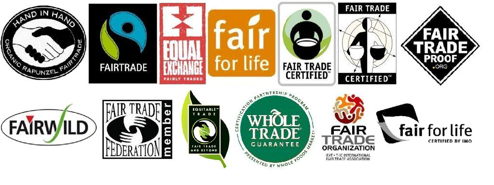

So you want to level up your coffee game? Maybe you don’t want to feel lost...
3. Making Coffee at Home
If you’re anything like me...

Whichever way you go, a simple plastic...
So you want to level up your coffee game? Maybe you don’t want to feel lost...
Coffee is coffee, right?...
Third-wave coffee is the main term used...
What does this mean for you?...
If you really want to respect the growers...
Another quick and easy way to sort out the beans...
So you’ve got your beans picked out...
If you’re anything like me...
Whichever way you go, a simple plastic...
• Up to 30g of coffee
• Medium grind size
• 1:14–1:17 ratio...
Whether you were just curious... check out folks like
Lance Hedrick,
James Hoffmann, or
Morgan Eckroth—amazing educators making coffee more accessible (and fun!) for millions around the world.
Thanks for reading—and cheers! ☕
I’m Calvin Sewell... My go-to is light-roasted African coffees, especially Ethiopian, from local roasters like Heart or Sterling, brewed on my V60 at home.